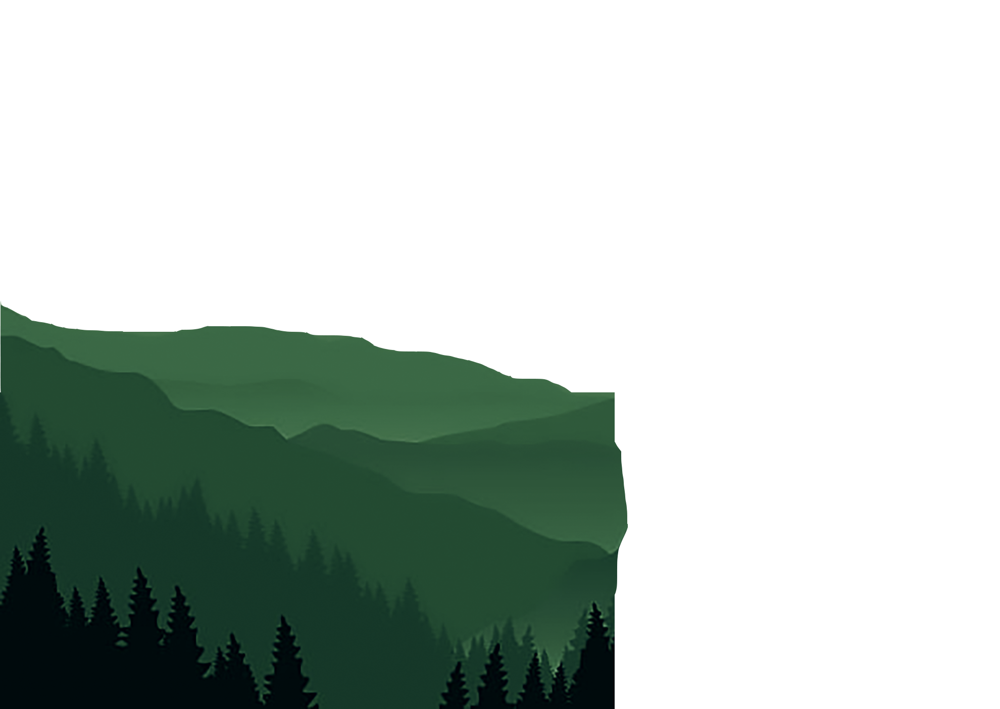
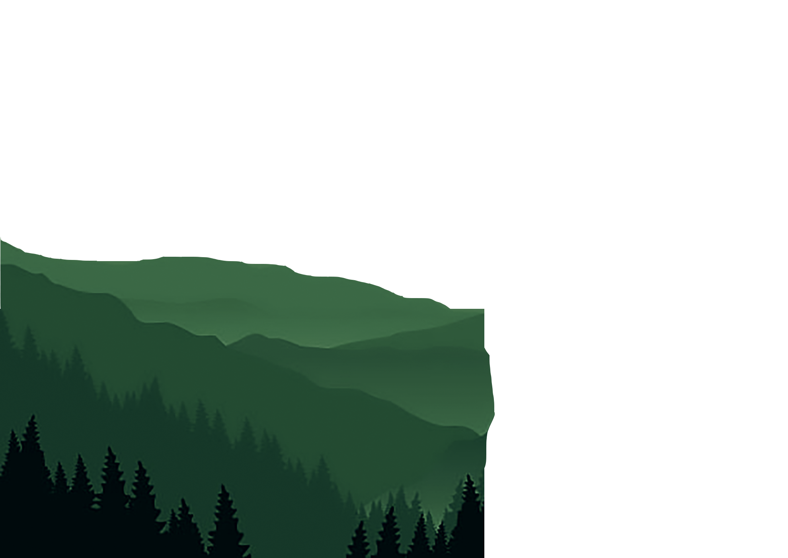
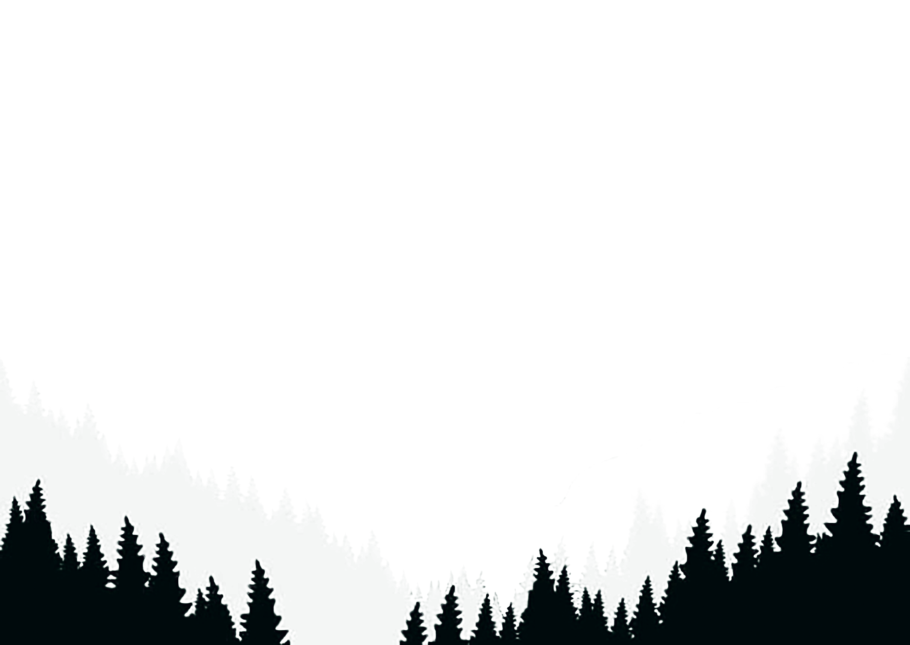
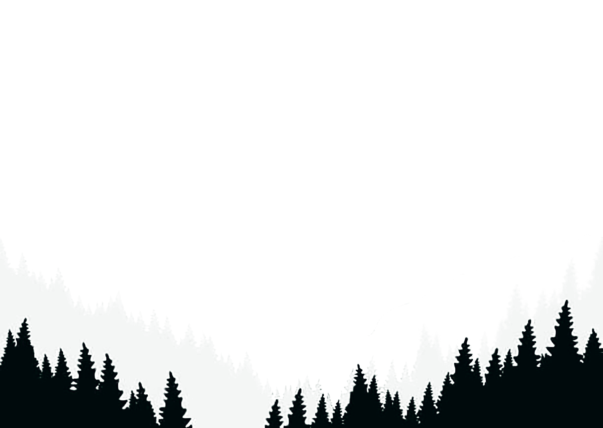
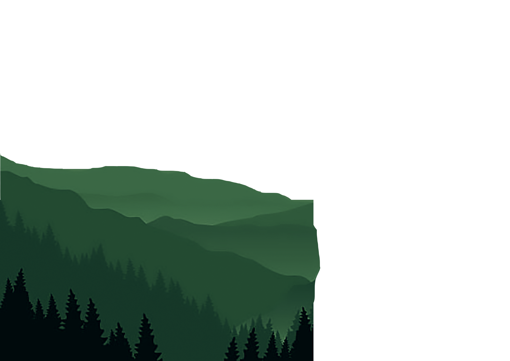
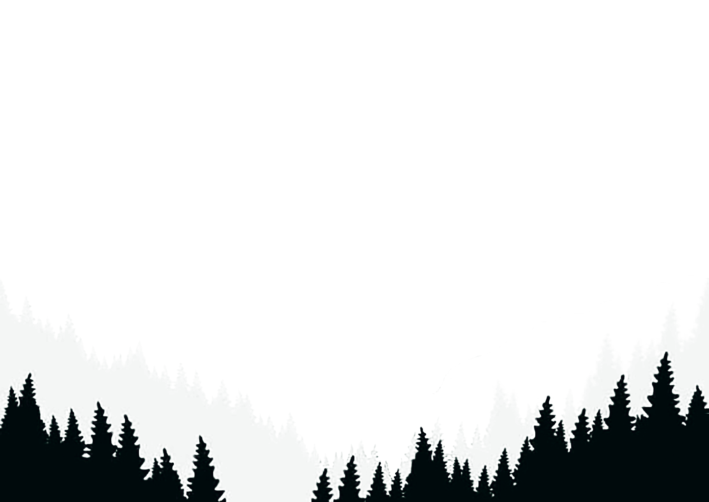

 

Religion 170 Final Project - Jacob Wiesenthal | Religion in Popular Culture (paganism portrayed in Outlander) and Popular Culture in Religion (cultural influences on the practice of Celtic paganism)




"There’s no place on earth with more of the old superstitions and magic mixed into its daily life than the Scottish Highlands"
In the early 18th century, the Scottish Highlands was the setting for fierce conflict between Scottish natives and British efforts to enforce a stronger grasp over the entirety of the Isles. Following three centuries in which England conquered Scotland and incorporated it into its kingdom, a tributary system was established to allow Scottish clans to operate on their own accord, on the condition that they supply the crown with various goods and comply with the British military's strict oversight.
Fast forward 200 years and we meet an English combat nurse named Claire Randall in Outlander, a drama television series adapted from a historical fiction novel by Diana Gabaldon. Following the conclusion of World War II, Claire and her husband Frank decide to take a vacation in Inverness, Scotland. During her time there, Claire secretly witnesses a group of women dancing around a stone circle at Craigh na Dun, which unbeknownst to her at the time was worshipped by local Celtic religious traditions. The next day, however, she would soon realize its significance as she touches one of the stones and is suddenly transported into the past – more specifically the physical epicenter of tensions between the Scottish and the British in the 18th century, the clan lands of Ross-shire, Scotland.
Outlander follows Claire’s journey in this foreign world as she must assimilate into a traditional Scottish society, and simultaneously must come to reckon how she could have met this seemingly magical fate that contradicts her previous faith in science. It’s in this period of uncertainty for Claire that she, and the audience through her perspective, experiences a lifestyle heavily influenced by the Celtic paganism that had long epitomized the Scottish Highlands, yet was now being blended with British-sponsored Roman Catholicism. As we’ll explore throughout this page, Outlander offers an uncommon look into the dynamics of these pagan religious traditions and how many looked to religion to preserve their cultural identities in a time of uncertainty.

The Scottish Highlands of the 18th century was a point of syncretic shift, where Roman Catholicism melded with traditional pagan traditions at the influence of contemporary cultural and political changes. Outlander transports us to a world where, despite a modern perspective through the time-travelling protagonist, we accept a reality of magic after witnessing an inexplicable event and better empathize with the Highlander societies through living out their struggles. At the same time, we see the Highlanders embrace innovations of science and Catholicism alongside their traditions, rather than choosing one or the other. It’s in this way that Outlander highlights the pagan practices of these people not as a counterfactual to Catholicism or modernization, as they are often represented, but rather as a foundation by which they were able preserve their cultural values and identities as they adopted new institutions from the world around them.
Claire Beauchamp Randall Fraser - A combat nurse living in mid-20th century England who accidentally travels back in time to the mid-18th century Scottish Highlands, Claire finds solace in her newfound love for Jamie and her healing abilities that find heightened importance in a time of immense conflict. She begins Outlander as a non-practicing Catholic, but gradually comes to embrace many aspects of the Church as well as pagan traditions.
James (Jamie) Alexander Malcolm MacKenzie Fraser - A well-educated Scottish soldier living in the mid-18th century who falls in love with a strange woman named Claire who heals his wounds from battle, Jamie then marries Claire and is afterwards told that she is a time traveler. He is a proud Catholic who regularly turns to his faith in times of struggle to find optimism, although there are several occasions throughout the series in which he affirms various pagan beliefs.
*The long names reflect a rather complicated story
Clan MacKenzie - A Scottish clan in the Ross-shire county of the Scottish Highlands, reestablished in 1690 with Castle Leoch as its seat. The castle serves as the primary setting for the Outlander series, where Claire will reside and meet many members of Clan MacKenzie, learning about their religious practices and developing her own identity as the clan's predominant healer.
Paganism – While the term “paganism” can be used to describe a wide range of religious practices, I use it in this page to specifically refer to the Celtic polytheistic traditions portrayed in Outlander which were prevalent in the Scottish Highlands dating back as far as 500 BCE and have remained ingrained in much of Scottish culture even today. The Scottish Pagan Foundation describes three core attitudes and beliefs of these practices:
Syncretism – Religious syncretism is the process of molding multiple religious belief systems into one, often in the form of one being sanctioned upon the others as an effect of cultural or political changes in society. In the case of Outlander, pagan traditions of the Highlands were blended with Roman Catholicism at the encouragement of the British, who were attempting to acclimatize the Scottish into English rule.

The act of storytelling has always been an integral part of Celtic pagan traditions, as bards and seanachies have for generations been charged with recording Scottish history and the folktales that lend it spirit. As Outlander is itself storytelling, there is often a charming juxtaposition between the stories that we watch unfold as part of our protagonist’s journey and those auxiliary stories that we catch being told through the traditions around her. This is never more evident than in Claire’s first encounter of a Scottish bard in the gathering hall of Clan Mackenzie’s Castle Leoch, when these two channels converge into a singular story that foretells her future through the remembrance of a pagan folktale.
In the gathering hall, Claire listens to the bard’s story, sung in Gaelic as Jamie translates for her. His explanation of the tale is as follows:
"Now this one is about a man out late on a fairy hill on the Eve of Samhain who hears the sound of a woman singing sad and plaintive from the very rocks of the hill. ‘I am a woman of Balnain. The folk have stolen me over again, ‘the stones seemed to say. ‘I stood upon the hill, and wind did rise, and the sound of thunder rolled across the land. I placed my hands upon the tallest stone and traveled to a far, distant land where I lived for a time among strangers who became lovers and friends. But one day, I saw the moon came out and the wind rose once more. So I touched the stones and traveled back to my own land and took up again with the man I had left behind."
If you’re familiar with the Outlander series, this early foreshadowing will give you goosebumps.

In this moment, the plot of a modern television show and an age-old Scottish legend become one. Granted, the folktale is in actuality fabricated for the purpose of Claire’s circumstances, but in the scope of Outlander, the series of events described appears eerily similar to what Claire had just experienced. She too heard the sound of a woman singing, heard the call of the standing stones at Craigh na Dun, felt the winds rising around her, and traveled to a distance land where she would meet strangers that were tentatively becoming friends and perhaps even lovers. Claire realizes that this tale was likely fact rather than fiction, a detailing of the exact phenomenon that had happened to her. In a room full of Highlanders who had grown up hearing endless stories about the powers of standing stones, she the 20th century Englishwoman becomes the most convinced believer in the reality of this folktale.
This presents a perspective of pagan folklore that few other popular medias have been able to achieve. It’s one thing to understand the beliefs and the history behind the tales, but another to experience it as we do through Claire’s story. As an audience, we must place ourselves in a state of openness to the reality of this folklore and we must think and feel about the show in a setting where magic exists and various pagan beliefs can be proved factual. It goes beyond suspension of disbelief, because we’re unsure what we should believe – what does exist in this world?
The bard’s song occurs relatively early in the series, and at this point the audience is still unfamiliar with this new world and what boundaries Outlander puts in place. We’re unsure whether Outlander takes place in a world where all pagan folklores are factual, or if contemporary science is strictly followed and Claire is just having a wild dream. With such an environment of uncertainty, we feel similarly to Claire in this moment, wondering how much we know about this world, and if the part about returning home will also hold true for her.
When we typically learn about pagan folklore, we do so through the lens of our already long-established understandings of how the world around us works. We read about stone circles and appreciate the beauty in the stories, but consider them as just stories. In a setting as rich in belief of supernatural forces as the 18th century Scottish Highlands, people who heard these types of stories surely understood them much differently than we do today. In Outlander, we’re able to take a step closer to what it would be like to hear these stories as more than stories, and on top of that to truly care about them, for they might give us insight into the fates of our beloved characters. This is one of the best examples in Outlander to exemplify Forbes and Mahan’s conclusion that “there is fluidity among the relationships between religion and popular culture,” in this case becoming one entity.
When Claire first travels through the stones at Craigh na Dun, she does so on Samhain, a Gaelic festival that marks the transition from harvest to winter season. Samhain is best known as the pagan predecessor for what we now know and love as Halloween. Many mid-millennium observances of Samhain resembled trick-or-treating, and the holiday’s strong connection with “the dead” is equally famous. As such, for the last century this resemblance has been reinforced by popular media every October in the form of fun facts and not-so-fun warnings about the devil-worshipping undertones of Halloween and Samhain.
I would highly suggest taking a look at this article which makes the misguided but common association between Christian hell and the pagan underworld: The Truth About Halloween. Surprisingly, this interpretation of paganism as an antithesis to Christianity is rather popular in media, despite the two sharing little to nothing in common in terms of folklore and beliefs. Celtic paganism like the kinds shown in Outlander don't make judgments on or even consider the Christian God or biblical stories, instead recognizing an array of their own Gods and Goddesses. Equating paganism as an opposite to Christianity is just as incorrect as labeling any other separate polytheistic religion as such.
More curiously, however, is the aspect of time in Samhain, something rarely looked at in popular culture. As one of the four Gaelic seasonal holidays, Samhain is a celebration of the past and the future, where historically laws were renewed, cattle were moved to winter pastures, and annual offerings and rituals to the Gods were performed to remain in their good graces. Fire was and remains today an integral part of Samhain celebrations, representing the destruction of harmful influences to allow a pure start to a new season. This is on full display at the start of Outlander when Claire observes a group of druids performing a ritual around the stones holding containers of fire, and creating the beautiful scene below.
Samhain is also recognized among pagan practices as a liminal time, allowing spirits, fairies, and even people to travel to and from our world. Sound familiar? For a holiday otherwise known as “the time between times,” the time-travelling adventure of Outlander that places Claire between two practically separate worlds is a perfect fit for its representation. There’s even speculation that one of the opening scenes of the show, where a ghostly figure on the Eve of Samhain can be seen staring at Claire’s window might in fact be Jamie’s ghost visiting her on the one night he is able to enter this world.
Not only does Samhain and the beliefs associated with it create an appropriate context for Claire’s first encounter with Celtic pagan mysticism, but it’s portrayal in Outlander helps to expand the public register of what it meant to be a druid or a pagan in this time. The dancing druids that ended up iconially in the show’s opening credit sequence are much more passive than the “flogging, torturing, and molesting” stereotypes that still seem to float around today (told you that article was worth a read). Claire even has the opportunity to meet two of them, Mrs. Graham and Geillis Duncan, who become close friends of hers. Perhaps most importantly, we see these characters in their everyday lives outside of these rituals, as well as their personal characteristics and ambitions irrespective of religion, as is especially the case with Geillis.
When Claire first watched these dancers from an outside perspective, she knew them only as pagan druids and believers of spirits and Goddesses. However, as she and we as an audience get to know them better through the show, we understand their identities to evolve and become much more complex than just their religious practices. Geillis is even married to a procurator fiscal – a lawman abiding by the Catholic church – in 1743 at the same time she avidly practices Celtic paganism. While our fascination with Samhain’s similarities to Halloween may render our perceptions of pagans as otherworldly as the spirits of the day, Outlander reminds us that those who celebrated the festival were just as diverse as those who celebrate its candy-centric descendent today.
On a side note, one of the most famous social anthropologists to study Samhain was named James Frazer, eerily similar to James Fraser in our time-traveling story of Outlander. Could it be… him?
Claire and Jamie’s wedding is a perfect example of the melding that takes place in the time of Outlander between Scottish religious traditions and Roman Catholicism. The ceremony takes place in a church, ministered by a Catholic priest, and includes typical Catholic marriage vows. However, after the vows, Dougal Mackenzie (a staunch Scottish patriot) initiates a Gaelic blood vow by drawing blood from Jamie’s and Claire’s wrists and then performs a variation of Celtic handfasting, in which the bridge and grooms’ forearms are bound together with a cloth. Dating back to the 12th century, handfasting in northern Scotland was considered to be an intermediary stage before marriage, and could often be a legally binding agreement of good faith before a final wedding.
However, by the 17th century, as the English sought to sponsor Roman Catholicism in their Scottish territories, the validity of Scottish marriages that strayed from Catholic canon were disputed. The handfasting and blood vow that we witness in Outlander likely would not have taken place if Castle Leoch was located more southernly, as many priests refused to minister weddings that deviated from the standard of the Catholic church. Yet, the priest of Jamie and Claire’s wedding is Scottish, and the ceremony takes place in the heart of Clan Mackenzie’s lands, allowing for a unique view into how these age-old traditions would blend with new cultural circumstances.
Interestingly enough, in 1754, just 11 years after Jamie and Claire’s marriage takes place, Great Britain would pass the Marriage Act for the Better Preventing of Clandestine Marriage, which would require a formally sanctioned ceremony for a marriage to be recognized. After this date, handfasting quickly dissipated in Scottish practice, and would not significantly resurface again until the late 20th century as part of a Neopagan and Wiccan revival.
What we observe in Outlander is a point of cultural and religious transition, in which there is confrontation between differing external values, being conformity through Roman Catholicism and preservation through Celtic traditions. In parallel, this act of marriage itself proposes a system of conformity in the form of strict faithfulness to one’s partner, as well as preservation in the form of continuing one’s love for another for the remainder of their life. These forces combine for a visually and sentimentally beautiful ceremony, and one that exemplifies Forbes and Mahan’s structure of “the impact on popular culture upon traditionally recognized religious groups… influencing how they operate” (14-15).

Following a tumultuous few years in Scotland, the happily married Claire and Jamie decide to move to France in order to influence an upcoming Jacobite Rebellion against English rule in Scotland that would inevitably result in the collapse of clan sovereignty in the Highlands. One day in 1744, when Jamie is questioned about his wife by a prominent Jacobite supporter, he replies that she is La Dame Blanche, or the white lady. Those who overhear this claim quickly quiet down, and Jamie is not questioned about her any further.
In French mythology, La Dame Blanche is a reclusive supernatural woman – a witch – that has the ability to command creatures to do their bidding. Rumor quickly spreads through their town and soon Claire is aware of her unfortunate reputation as a bonified Dame Blanche. This is justifiably at the fault of Jamie, who would again reinforce the title by claiming that any man who touched his wife would have their “privates blasted like a frostbitten apple and his soul will burn in hell forever."
His later descriptions, however, tend to more closely align with the Celtic folklore of Dame Aliset, a Scottish white witch, closely associated with the mythological Crone Dryad of Death, which embodied destruction and annihilation. There is, naturally, much overlap between French and Gaelic storytelling about the figure of the white lady, and both Frenchmen and Highlanders come to respect Claire sensing the weight of the title, whether they’re fully familiar with either tale.
To illustrate this, in her meeting with King Louis XV of France, Claire is led to a mysterious room in which two men stand surrounded by guards, accused of sorcery. The King asks Claire to use her powers as La Dame Blanche to see the souls of the two men and decide who’s defense is truthful. While this power is not exactly a characteristic of either the historical French or Celtic mythology, it nonetheless emphasizes the value of superstition in pagan folklore. Claire, of course, is happy to oblige the King given that one of the men is (confidentially) her personal friend. She takes the opportunity to act the part and clear her friend's name, condemn an enemy to death, and all while avoiding the snake that King Louis had brought out for her to control.

By the time they must leave France, Claire has fully embraced the role of La Dame Blanche, even using her reputation to disrupt a dinner party with prophetic and purposefully distracting visions. The title was convenient for many reasons, but I’d argue that her adoption of it had as much to do with her personal identification with the figure as it did with intimidation. In some sense, Claire is indeed a supernatural being to her 18th century counterparts. She comes from a distant land with unprecedented healing “powers” due to her extensive training as a combat nurse. As an Englishwoman who looks unlike any of her companions and doesn’t subscribe to the stereotypically-womanly roles she is assigned by unknowing strangers, she stands out as a fearless, perhaps dangerous outsider. Given these truths, it’s not hard to believe that Claire would feel like a dangerous outsider during her time in France.
In taking on the role of La Dame Blanche, Claire is in fact representing her true identity more accurately. It allows her to wear her otherworldly persona out in the open, and offers her an excuse for any accidental comments that could expose her as a time traveler. Moreover, the figure embodies who she wants to be in this new world, a benevolent healer who has the power to change the destinies of those she cares about and do harm to those who oppose her and her husband. Being La Dame Blanche is, in a strange way, Claire being herself. In other words, through an understanding of the importance of superstition in French and Highlander religious culture during the 18th century, and by developing a reputation sourced from Celtic mythology, Claire is able to preserve her 20th century identity in a setting where it would otherwise be made invisible.
As Claire begins to befriend Geillis Duncan after witnessing her performing a ritual uncannily similar to the one she witnessed on Samhain, she joins her on a peaceful walk through the woods. That peace is shattered when Claire hears the cries of an infant coming from deep within the woods, where she would soon find a freezing baby resting in the crescent of a tree trunk. Already devastated by the infant’s ensuing death, Claire is even more enraged when she learns that the child was placed in the tree and left out in the cold on purpose as part of an offering to the fairies. We learn that the infant was considered by its parents to be a changeling, or a fairy newborn.
In Scottish folklore, fairies, elves, or “Wee Folk” as they’re referred to in Outlander would often steal human children and replace them with their to deceive the humans into believing that the changeling was in fact their child. Infants who had stunted development were sometimes suspected of being a changeling, and so parents would leave them out in the cold in hopes that the “Wee Folk” would pity a child of their own kind and swap the changeling back for the human child, whom the parents could retrieve the following morning. This description is represented well in the Outlander scene, going so far as to include the red thread above the infant’s head that was characteristic of many real changeling practices.
When Claire hears that this was the case with the infant she found, she immediately seeks retribution with the parents, cursing them for their murder of the child. However, Jamie quickly and correctly reminds her of the context in which the Highlanders see the situation. When seeing the dead child, the parents would much rather believe that it’s the changeling which has died, and that their real child is living happily among the fairies, rather than the opposite.
Claire: “Don’t tell me you believe in fairies and changelings and all that...”
Jamie: “It’s not about what I believe… For the parents of that child, it might comfort them a bit to think it’s the changeling that died, and to think of their own child healthy and well living forever with the fairies.”
Jamie also remarks that Father Bain, head priest of Clan MacKenzie, would uphold this notion, despite the concept coming from pagan folklore rather than Catholicism. In fact, we later see Father Bain in Claire’s trial pose no objection to the idea when it’s discussed. It’s peculiar that a man as committed to the Catholic church as Father Bain, whose catch phrase is “God will have the last word!” would allow such a practice to continue, but I think this is evidence of religion morphing to meet the cultural and societal needs of the people.
It may sound odd to us in a world of modern medicine, but in this time and place, it could be a positive force to have a comforting story that alleviates the pain of losing a child with an “uncurable,” likely fatal condition. Survival rates among unhealthy infants were low, and while many surely met an unnecessary and extremely unfortunate death, this was a truth of child-bearing. Folklore of changelings, as Outlander correctly eludes, had existed for hundreds of years before this point and become part of the culture around having a child that developed as a response to the challenges that parents were facing. This culture naturally evolved to what best helped parents cope and move forward for their own good and by extension the good of society.
Outlander’s proposition that the Catholic church was supporting this belief is not difficult to believe given how synchronal paganism and Catholicism were in the eyes of the Highlanders. It’s a distinctive example of how pagan traditions were synergized with Roman Catholicism as a function of culture and the needs of the time, and one that would be difficult to compellingly depict if we didn’t have the inside look into Highlander livelihood that we do in Outlander.

On another walk through Castle Leoch with her friend Geillis, Claire learns that the parish priest of the castle Father Bain is preparing to perform an exorcism on a young boy in town who was exhibiting signs of “possession.” Coming from a time where the idea of possession was largely debunked with modern scientific diagnoses, Claire wonders if she can perhaps save the boy with her medicinal knowledge, and she decides to visit his home despite Geillis’ warnings.
Once there, Claire is appalled to see the sick boy, named Tammas, tied up to his bed as his family looks to Father Bain who stands above the boy performing an exorcism rather than any doctoral treatment. When she attempts to intervene, she is quickly dismissed and expelled from the house by Father Bain and Tammas’ family who are afraid to disrupt the exorcism’s chance at saving their child.
Distraught, Claire conducts some ethnographic research and discovers that Tammas had consumed a poisonous plant called Convallaria Majalis, mistaking it for wood garlic. Claire knows a botanical recipe that can counteract the poison, and she quickly creates a remedy that she brings over to Tammas’ house. There, she gets into a heated conflict with Father Bain, who refuses to let a woman intervene in his exorcism as the boy rapidly approaches death. However, this time when Tammas’ body begins to shut down, his family in desperation tells Father Bain to step aside and allows Claire to try using her remedy. The concoction works in reversing the poison, and Tammas thankfully lives.
This scene is fascinating because it shows two separate sides to the faiths of Highlanders in this setting. On one hand, Catholicism had great authority and people strongly believed in the powers of demonic possession and exorcism. When Claire first sees Tammas, his family confirms that the devil has taken the boy, and Tammas himself cries for Claire to not come near him or try to help else be vulnerable to be possessed as well. Even Jamie, who often takes Claire’s side on many faith-based questions, echoes his belief in the story that Tammas’ family had told – that boys who enter the Black Kirk (a ruinous swamp where Tammas was infected) are often taken by demons if their souls are weak.
However, in the Celtic pagan practices that subsisted in the Highlands, herbology was in many cases considered sacred work. Basil was used to purify homes with good luck, lavender was included in many brews to bring love or calmness, mugwort was key for many divination rituals, and sage would bring wisdom. Even aside from medicinal uses, many herbs and plants were centerpieces in pagan celebrations. Apple blossoms were prevalent on Samhain as a symbol of immortality and mistletoe was collected by druids to celebrate the winter solstice. While it was a far stretch from the modern caricature of a witch brewing potions, herbs were applied for many purposes in these pagan practices, and were most importantly appreciated by people whether they practiced herbology or not.
When Claire reveals to Tammas’ family that she has brewed a decoction of belladonna to help their son, they agree to let her help even understanding that the remedy was not guaranteed to work. I believe that we can infer that this change of heart among Tammas’ family is backed by their recognition of the magical powers of herbology. Their cultural understanding of the practice along with its perceived sanctity led them to value its healing abilities to a greater degree than they did the exorcism and by proxy the church. This was a tall order to defy the word of the church as they did to Father Bain. It reflected a faith in Claire’s antidote that went far beyond their trust in this Englishwoman they had just recently met.
At the same time, this is not to say that Tammas’ family rejected Catholicism in order to follow a pagan faith. In fact, after Tammas is resuscitated, his aunt implores the Catholic God to bless Claire, and Tammas’ mother claims that the event was a miracle. Instead, the family called on two of their faiths, in the sanctity of both exorcism and herbology. This exemplified how Highlanders were able to adopt Roman Catholicism so fervently, yet still preserve their cultural valuation of, and belief in the magical powers of herbs.
While it may be difficult to discern how exactly Claire feels about her faith after all of her anomalous adventures, it’s undeniable that she has become more “religious” throughout the series, in that she refers to religion for answers and consolation much more frequently than in her life beforehand. The religious fusion which she has adopted is unlike anything she could have inherited in the 20th century alone, as it draws from the unique beliefs, behaviors, and sense of belonging of a Highlander culture that stood pronounced in history as a time of extraordinary transition.
She challenged her firm adherence to science as she accepted the magic behind the supernatural events that happened to her on Samhain. She participated in a wedding ritual that was unknown to her yet ultimately formed one of her fondest memories, and further altered her behavior and mannerisms towards others to personify a character in Celtic folklore that reflected her outsider identity. All the while she found a place in her Scottish and French communities as a distinguished healer who still respected the religious beliefs of her patients and neighbors.
Through these scenes, Outlander is able to accurately portray Celtic pagan religious traditions unlike any other source in popular media. It is alone in its perspective that allows the audience to understand the cultural and political contexts of paganism in the Scottish Highlands, doing so by placing us side by side with the regular people who constituted Clan MacKenzie. Rather than hearing anecdotes about paganism and Roman Catholicism separately and contrasting their many differences, we see their influence on Highlander life play out among these people, we root for them, and ultimately derive a much more complete understanding of the aspects of these practices that mattered most to them. When this approach is realized in the show, we see that pagan practices complimented Catholicism in many ways, allowing Highlanders to preserve their Scottish traditions and values while also enabling organized religion to play a larger role in the functions of society.
Britishfairies. “Fairy Lore in 'Outlander'.” British Fairies, 28 Oct. 2018, britishfairies.wordpress.com/2018/10/28/fairy-lore-in-outlander/.
Brough, Ami. “The Tradition of Handfasting.” The History behind Handfasting and Blessings, Gretna Green Scotland, 15 Dec. 2017, www.gretnagreen.com/the-tradition-of-handfasting-a1015.
Davy, Barbara Jane. Introduction to Pagan Studies. AltaMira Press, 2007.
“France.” The Fairy Mythology: Celts and Cymry: France, www.sacred-texts.com/neu/celt/tfm/tfm177.htm.
Krossa, Sharon L. “Historical Handfasting.” Historical Handfasting, 13 May 2006, medievalscotland.org/history/handfasting.shtml.
MacCulloch, J. A. The Religion of the Ancient Celts. Benediction Classics, 2011.
“Magical Properties of Herbs.” Wicca Living, 2019, wiccaliving.com/magical-properties-herbs/.
Narváez Peter. The Good People: New Fairylore Essays. University Press of Kentucky, 1997.
“Neo-Pagan Celebrations of Samhain.” Treat or Trick?: Halloween in a Globalising World, by Hugh O'Donnell and Malcolm Foley, Cambridge Scholars Publishing, 2009, pp. 67–80.
Ritchie, James. Folklore of the Aberdeenshire Stone Circles and Standing Stones. Archaeology Data Service, archaeologydataservice.ac.uk/archiveDS/archiveDownload?t=arch-352-1/dissemination/pdf/vol_060/60_304_313.pdf.
Rushton, Neil. “The Faerie Changeling Phenomenon.” Otherworldly Things, Deadbutdreaming, 9 June 2018, deadbutdreaming.wordpress.com/2018/05/13/the-faerie-changeling-phenomenon/.
“Samhain.” Celebrate the Earth: a Year of Holidays in the Pagan Tradition, by Laurie Cabot and Jean Mills, Delta, 1994, pp. 12–45.
“The Truth About Halloween.” The Truth about Halloween, European American Evangelistic Crusades, 2007, www.eaec.org/bibleanswers/halloween.htm.
Watson, W. J. “The Celtic Church in Its Relations with Paganism.” The Celtic Review, vol. 10, no. 39, 1915, p. 263., doi:10.2307/30070349.
“What Is the Scottish Pagan Federation?” About Us, Scottish Pagan Federation, 2019, www.scottishpf.org/about.html.
Whittet, Martin M. “Historical Aspects of Celtic Medicine.” Proceedings of the Royal Society of Medicine, vol. 57, no. 5, 4 Mar. 1964, pp. 429–436., doi:10.1177/003591576405700537.
Wigington, Patti. “10 Magical Herbs to Use in Pagan Practice.” Learn Religions, 25 June 2019, www.learnreligions.com/magical-herbs-to-have-on-hand-2562042.